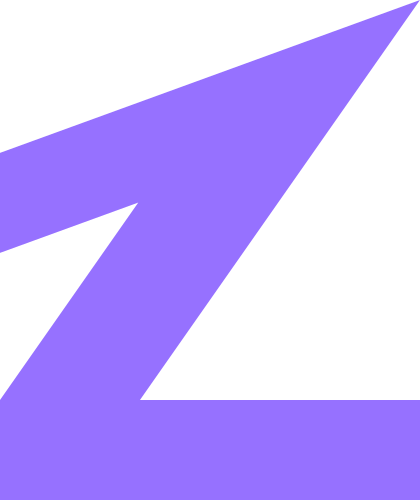

A · Summit Z, refinedSelected
The V2 mark, redrawn. One solid form: the climb, the summit and the base. The angles now relate to each other (20° + 35° = 55°), the stroke weights are balanced, and a separate micro master handles 16–24 px.